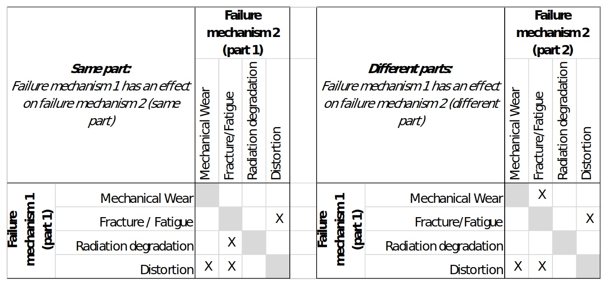
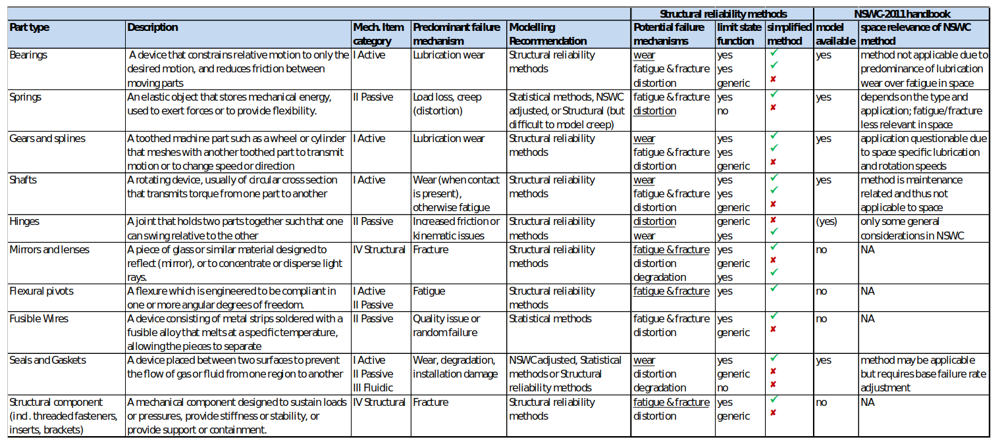

Method selection for different items and failure mechanisms
Contents
3.4.5. Method selection for different items and failure mechanisms¶
Once it is clear what needs to be considered in the reliability prediction (see Section 4.4), the next step is to decide how each part and failure mechanism should be modelled. The present section gives guidance on this method selection task.
3.4.5.1. Categories and combinations of mechanical failure mechanisms¶
The method selection for mechanical parts reliability modelling should always take basis in a good understanding of the failure mechanisms that are of relevance for the considered item, especially the predominant ones. To simplify the presentation in the following sections, mechanical failure mechanisms are grouped into five distinct categories listed in Table 4 -4.
Table 4.4: Categories of mechanical failure mechanisms.
Failure mechanism category |
Examples |
|---|---|
Distortion |
Creep, elastic deformation, plastic deformation, displacement |
Fracture / Fatigue |
Ductile/brittle fracture, high-cycle fatigue, low-cycle fatigue |
Mechanical wear |
Adhesive wear, abrasive wear, lubricated wear |
Corrosion |
Stress-corrosion cracking, galvanic corrosion |
Material degradation |
Thermal degradation, radiation damage |
The probability of failure can for some items be driven by several different failure mechanisms. When using PoF methods, the results for the individual mechanisms have to be combined to estimate the overall part reliability. The correct way of doing this depends on whether the different failure mechanisms can be considered as independent processes or events.
For independent failure mechanisms, it is sufficient to consider one process at once, and to combine the results using normal probability calculus.
However, independence between different failure mechanisms may not always be a valid assumption, e.g. in case of physical interactions between different failure mechanisms processes. Table 4 -5 gives an overview for which combinations of failure mechanisms such effects may have to be considered. The table distinguishes interactions between different failure mechanisms affecting the same part (left hand side) and between different failure mechanisms affecting different parts (right hand side).
Table 4.5: Possible interactions between different mechanical failure mechanisms.
A simple way to account for such interactions is to select the dominating failure mechanism (e.g. the one with the highest probability of failure) and to consider the effect of other failure mechanism(s) on the dominating failure mechanism. When using structural reliability methods, this can be achieved by adapting the basic variable distributions to account for physical effects related to other failure mechanism processes. The assessment then requires the following steps:
Selection of the dominating failure mechanism – e.g. wear of a lubricated bearing.
Identification of other failure mechanisms that may interact with the dominating failure mechanism using Table 4 -5 – e.g. distortion of the membrane compressing the bearing.
Identification of physical variables used by the model for the dominating failure mechanism that may be affected by the interaction – e.g. increase of the contact pressure in the bearing.
Adjustment of the identified basic variables distributional models to account for the effect of the interaction – e.g. by considering the increased contact pressure.
Finally, it should be noted that besides physical interactions between failure mechanism, there are other possible reason for statistical dependence, such as common cause effects due to random physical variables (e.g. temperature, loads), having an effect on different failure mechanisms and/or parts. An example for explicit common cause modelling in a redundant bolted interface with load redistribution can be found in Error: Reference source not found.
Todo
Miss ref just above
3.4.5.2. Selection of methods for part level mechanical reliability prediction¶
The approach for method selection presented in the following is centred around the identified failure mechanisms, see Table 4 -6 giving an overview of different mechanical part types with associated failure mechanisms and modelling recommendations.
The third column of Table 4 -6 gives an indication about the relevance of each part type for different classes of mechanical systems introduced in . As has been discussed in Section 4.4, it may be sufficient to focus on those parts that dominate system level reliability. In the same way, the reliability of a specific part is often dominated by a single (or very few) failure mechanism(s), allowing to focus the analysis especially with methods that are based on the PoF.
Which failure mechanism(s) dominates reliability depends not only on the part type, but also on the application; e.g. a spring is likely to fail differently when used with static, cyclic or dynamic loading. The “predominant” failure mechanisms listed in Table 4 -6 should therefore be considered only as a first guidance.
The remaining columns of Table 4 -6 provide recommendations on the modelling of the selected parts and failure mechanisms. The focus is on the methods making reference to the Physics of Failure, in particular Structural reliability methods as outlined in Section 4.6 and 4.7..
The application of the Handbook approaches is restricted to selected parts, allowing the possible use of the NSWC Handbook Error: Reference source not foundas a scaling method (which is based the Physics of Failure) to adapt statistical estimates based on data samples that are more relevant for space applications than the NSWC data, see Section for discussion. The NPRD Handbook Error: Reference source not foundis not considered any further.
In Table 4 -6, statistical methods are mentioned only where a prediction based on a pure Physics of Failure approach is unlikely to be successful. However, as has been discussed already in Section 4.3.2, statistical methods are generally preferred over Physics of Failure approaches provided that sufficient and relevant data is available to perform the prediction. The failure mechanisms listed in Table 4 -6 can provide guidance for judging the relevance of a specific data set, always keeping in mind the strong variability in mechanical parts reliability when seemingly identical parts are applied under different conditions.
Also a combined approach with Bayesian updating of a prior derived from the Physics of Failure, using relevant data even with limited sample size, is generally preferred over a pure Physics of Failure approach, see Sections and 4.6.5 for guidance.
Table 4.6: Mechanical part types, associated failure mechanisms and modelling recommendations.
Todo
Table above to be computed
3.4.5.3. Selection of methods for assembly level mechanical reliability prediction¶
Reliability prediction for assemblies of mechanical parts can either be made bottom-up, combining part level inputs with system level reliability methods, or top-down, using inputs directly collected at the level of the considered assembly. In general, similar considerations apply as for part level mechanical reliability prediction, leading to the following modelling recommendations:
Statistical (or combined) methods are suitable provided that relevant failure data is available directly at the level of the considered assembly.
Physics of Failure methods based on Structural reliability theory are suitable if the assembly level probability of failure is dominated by one or very few failure mechanisms (see also the discussion in Section 4.4).
Bottom-up modelling starting from part level analysis is recommended in case none of the abovementioned conditions is fulfilled.
It should be noted that the NSWC Handbook Error: Reference source not foundcontains models also for some items that are better considered as assemblies rather than parts, including e.g. electric motors, solenoids and transducers. For reasons already discussed in Section , the direct use of these models is not recommended for space applications.
Todo
Miss ref just above